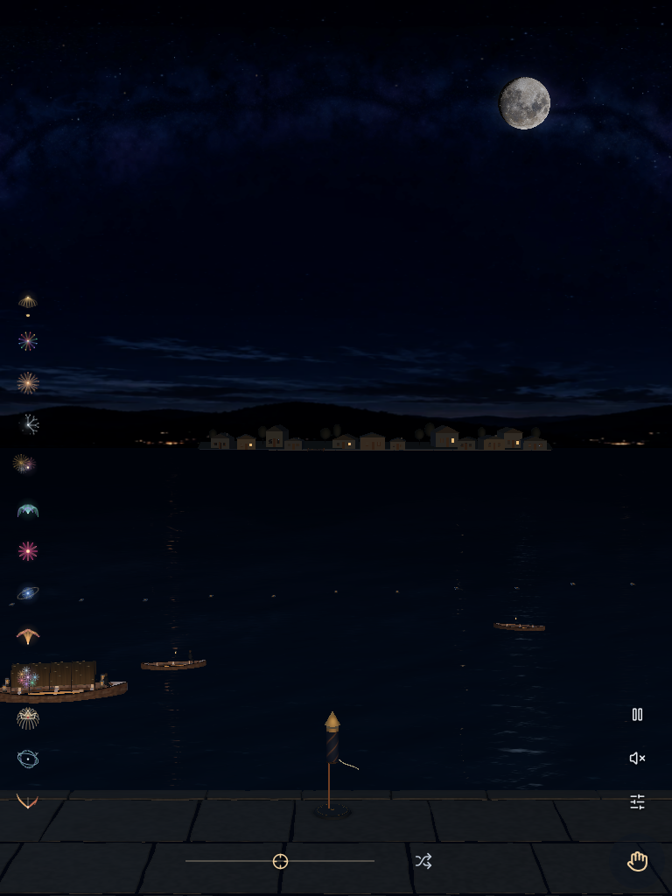
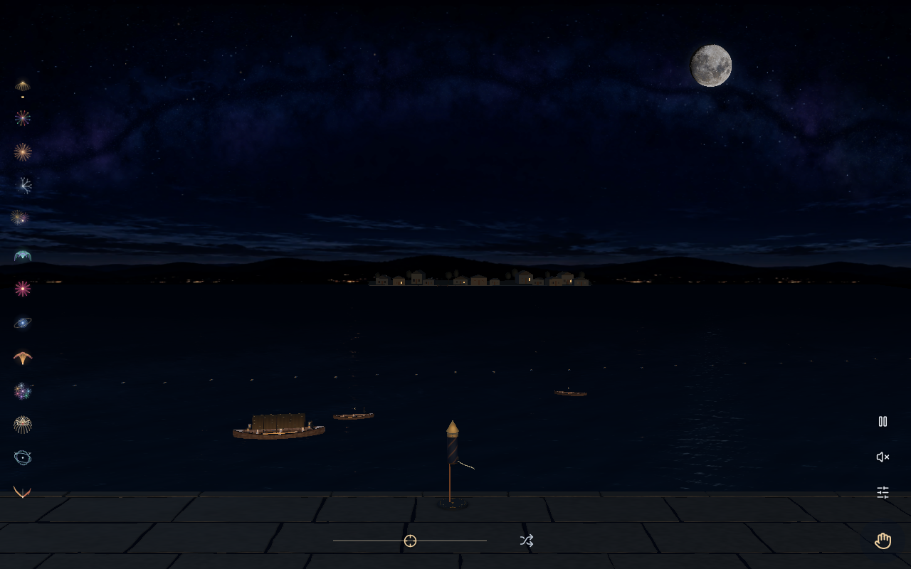

More open sky. A grounded launch.
Actual rendered captures from the retained thirteen-effect flagship candidate and the revised controls/launchpad candidate. Installed Chrome, native WebGPU, emulated CSS viewports; not physical phone evidence. Seed 20260916. Idle scenes are reset; Willow is captured 2.02 seconds after the calculated apex. Both builds retain the moon, water and thirteen effects.
Validation and limitations · Open candidate preview
A moon that opens your sky
Actual first-load recording in installed Chrome with native WebGPU, a fresh profile and an emulated 393×851 viewport. A real rocket artwork request is held, so counted preparation shows 8 of 9 assets; releasing that request lets the spinning moon settle into its exact sky position before the waterfront appears. Seed 20261001. This is browser emulation, not physical phone evidence.
Capture source fingerprint: f361634f9edf900ef6530810ffb084c0537c29c955f4b2e7d840e55ce57551a0. Capture metadata · Video file
393x851 · Ready to launch
393x851 · Willow in the upper sky
768x1024 · Ready to launch
 Before · 2026-10-01.2 · WebGPU
Before · 2026-10-01.2 · WebGPU

After · 2026-10-01.3 · WebGPU
768x1024 · Willow in the upper sky
1280x800 · Ready to launch
 Before · 2026-10-01.2 · WebGPU
Before · 2026-10-01.2 · WebGPU

After · 2026-10-01.3 · WebGPU
1280x800 · Willow in the upper sky
Source fingerprints and complete capture snapshots: before, after. Launchpad materials use bounded real-time geometry and a cached contact shadow. No claim of physical-device or universal 4K qualification.